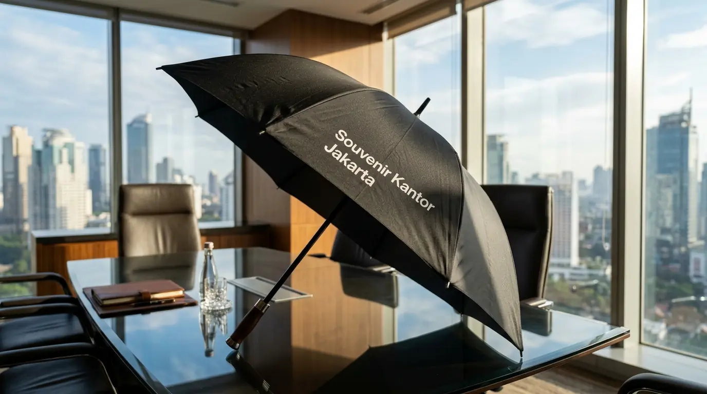
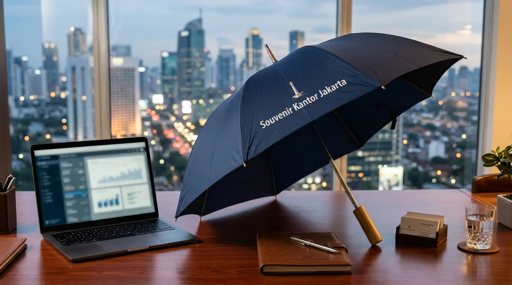

Payung Souvenir Kantor Custom Logo Perusahaan Terbaik
 SEO Corporate Merchandise Specialist
8 September 2026
5 Menit Baca
SEO Corporate Merchandise Specialist
8 September 2026
5 Menit Baca

Payung souvenir kantor custom logo adalah media promosi fungsional efisien yang berguna melindungi penerima dari hujan serta panas sekaligus memperkuat citra merek korporat.
- Payung souvenir kantor menawarkan return on investment tinggi dengan tingkat paparan merek secara berulang dalam jangka panjang.
- Model lipat tiga, golf, dan terbalik merupakan varian paling favorit untuk kebutuhan merchandise promosi serta corporate gift.
- Penggunaan material berkualitas seperti kain pongee anti-UV dan rangka fiber terbukti meningkatkan daya tahan serta impresi positif merek.
- Memilih vendor cetak berpengalaman di area Jakarta menjamin kepastian kualitas hasil sablon digital logo yang presisi dan tepat waktu.
Jawaban Kunci untuk Tim Procurement & HR
- Mengapa Payung Souvenir Kantor Efektif sebagai Media Promosi?
- Apa Saja Jenis Payung Souvenir Kantor yang Paling Favorit?
- Bagaimana Mengukur Kualitas Material Payung Souvenir Kantor?
- Faktor Apa yang Mempengaruhi Harga Payung Souvenir Custom?
- Kesalahan Apa yang Harus Dihindari Saat Memesan Payung Souvenir?
- Bagaimana Cara Pesan Payung Souvenir Kantor Custom Logo?
- Pertanyaan Populer (FAQ)
- Kesimpulan Praktis
Mengapa Payung Souvenir Kantor Efektif sebagai Media Promosi?
Payung souvenir kantor efektif sebagai media promosi karena memiliki daya guna harian tinggi, daya tahan lama, serta area cetak logo luas yang mudah terlihat.
Menurut studi Promometrics Indonesia periode 2025/2026, penggunaan barang promosi fungsional seperti payung mencatatkan tingkat retensi penerima hingga 84% dengan paparan merek rata-rata lebih dari 14 bulan. Dibandingkan media cetak sekali pakai, investasi pada produk ini memberikan nilai eksposur berulang tanpa biaya tambahan per tayang.
Ketika karyawan, klien, atau mitra bisnis menggunakan produk ini di area publik, logo perusahaan Anda secara otomatis terpapar kepada khalayak luas. Hal ini menciptakan visibilitas merek yang organik dan berkelanjutan di berbagai tempat strategis seperti lobi perkantoran, pusat perbelanjaan, halte transportasi publik, dan kawasan pedestrian ibu kota.
Apa Saja Jenis Payung Souvenir Kantor yang Paling Favorit?
Jenis payung souvenir kantor favorit mencakup model lipat tiga yang praktis, model golf eksklusif yang kokoh, serta model terbalik inovatif anti-basah. Kejelasan spesifikasi dari setiap model akan membantu perusahaan menentukan pilihan yang paling sesuai dengan target audiens event.
Payung Lipat Tiga (3-Fold Umbrella)
Berukuran ringkas dan berbobot enteng, mudah dimasukkan ke dalam tas kerja, dan sangat digemari oleh karyawan kantor atau peserta seminar kit massal.
Payung Golf Premium
Berukuran ekstra besar (diameter hingga 130 cm) dengan rangka serat karbon tahan angin. Sangat cocok disajikan sebagai corporate gift untuk jajaran eksekutif, direksi, dan mitra bisnis VIP.
Payung Terbalik (Kazbrella)
Desain lipat terbalik yang mencegah cipratan air saat masuk ke dalam mobil. Sangat disukai oleh para pengguna kendaraan pribadi karena interior mobil tetap kering.
Payung Otomatis (Open & Close)
Dilengkapi tombol pembuka dan penutup otomatis pada gagang untuk kenyamanan operasional penuh dengan satu tangan saat mobilitas tinggi.

Bagaimana Mengukur Kualitas Material Payung Souvenir Kantor?
Kualitas payung souvenir kantor diukur dari jenis bahan kain, daya tahan rangka, ketahanan lapisan anti-UV, serta presisi cetak logo. Memahami material penyusun menjamin produk yang dipesan tahan lama dan tidak mudah rusak saat diterpa cuaca ekstrem.
- Bahan Kain: Prioritaskan bahan kain Pongee atau Nylon Silver coating. Kain Pongee memiliki kerapatan serat lebih padat, cepat kering, dan tampil lebih elegan serta lembut dibanding bahan polyester standar yang kaku.
- Konstruksi Rangka: Rangka berbahan fiberglass jauh lebih lentur dan tidak mudah patah saat terkena angin kencang (windproof flexibility) dibandingkan rangka besi biasa yang rentan berkarat dan mudah bengkok.
- Teknik Cetak Logo: Gunakan metode sablon presisi cat rubber tahan air atau digital printing resolusi tinggi agar warna logo korporat tidak pudar, pecah, atau luntur setelah terkena air hujan berulang kali.
Faktor Apa yang Mempengaruhi Harga Payung Souvenir Custom?
Harga payung souvenir custom dipengaruhi oleh kuantitas pemesanan, jenis model payung, jumlah warna cetak logo, serta kecepatan waktu produksi.
Riset B2B Corporate Procurement Report periode 2025/2026 menunjukkan bahwa pesanan grosir skala besar mampu menekan biaya produksi hingga 35% per unit. Perusahaan yang memesan dalam kuantitas banyak untuk kebutuhan tahunan (annual procurement) akan mendapatkan penawaran harga satuan yang jauh lebih kompetitif.
Selain itu, kompleksitas desain logo juga menentukan teknik cetak yang digunakan, seperti sablon 1 warna per panel versus digital full color transfer, yang berpengaruh langsung pada estimasi alokasi anggaran akhir.
Kesalahan Apa yang Harus Dihindari Saat Memesan Payung Souvenir?
Kesalahan utama saat memesan payung souvenir mencakup pemilihan kain berkualitas rendah, ukuran logo yang terlalu kecil, serta memesan secara mendadak. Pemilihan bahan yang asal-asalan dapat merusak citra profesionalitas perusahaan di mata penerima.
Kain Kualitas Rendah
Bahan polyester tipis tanpa lapisan anti-UV mudah sobek dan terasa panas saat digunakan di bawah terik matahari siang.
Ukuran Logo Kurang Pas
Logo yang dicetak terlalu kecil sulit terbaca dari kejauhan, sedangkan penempatan yang miring mengurangi nilai estetika profesional instansi.
Pesanan Mendadak
Proses sablon dan pengeringan cat waterproof butuh waktu presisi agar tidak luntur saat payung dilipat dan dikemas ke dalam kardus pengiriman.
Lakukan pemesanan jauh-jauh hari sebelum tanggal acara diselenggarakan. Selalu minta sampel fisik (dummy) dari vendor sebelum menyetujui proses produksi massal guna memastikan akurasi warna Pantone dan kualitas jahitan rangka.
Bagaimana Cara Pesan Payung Souvenir Kantor Custom Logo?
Cara memesan payung souvenir kantor custom logo melibatkan konsultasi kebutuhan desain, pemilihan spesifikasi material, persetujuan sampel, dan proses cetak massal. Langkah terstruktur ini memastikan hasil akhir sesuai standar branding perusahaan:
- Tentukan Rencana Kebutuhan: Hitung estimasi anggaran, tentukan model payung (lipat 3 atau golf), serta kuantitas unit yang dibutuhkan.
- Siapkan File Desain: Kirimkan file logo beresolusi tinggi (format vektor seperti AI, PDF, atau SVG) kepada penyedia jasa.
- Review Sampel Digital & Fisik: Periksa mockup digital serta sampel fisik (dummy proofing) sebelum pesanan dinaikkan ke meja cetak massal.
- Produksi & Pengiriman: Setujui proses produksi massal dan tentukan jadwal pengiriman aman langsung ke kantor atau lokasi venue acara Anda.
Pesan Payung Souvenir Kantor Custom Logo Berkualitas
Tingkatkan citra profesionalitas perusahaan Anda sekarang juga! Dapatkan penawaran harga terbaik dan konsultasi gratis untuk pemesanan cenderamata kantor berkualitas tinggi dengan pengerjaan cepat dan bergaransi resmi.
Konsultasi Souvenir Kantor JakartaPertanyaan Populer (FAQ)
Kesimpulan Praktis
Investasi pada payung souvenir kantor custom logo merupakan strategi pemasaran teruji yang memberikan dampak branding jangka panjang bagi korporat. Dengan memilih model yang tepat, material berkualitas seperti kain pongee anti-UV, dan kemitraan bersama vendor tepercaya, perusahaan dapat meningkatkan kredibilitas merek secara optimal.
Tingkatkan citra profesionalitas perusahaan Anda sekarang juga! Dapatkan penawaran harga terbaik dan konsultasi gratis untuk pemesanan Souvenir Kantor Jakarta dengan pengerjaan cepat dan hasil cetak berkualitas premium.